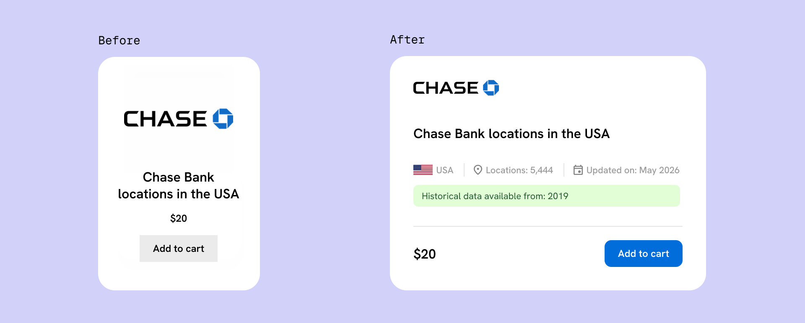
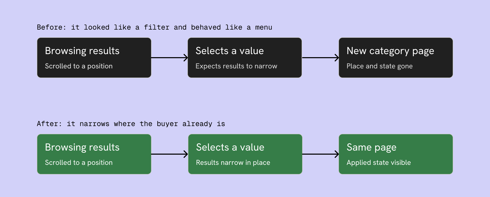

ScrapeHero Data Store
E-commerce for Datasets
Responsibilities
Redesigned and rebuilt the Data Store end to end: UX, UI, and the build in WooCommerce and Elementor. Sole designer, five months.

Context
The Data Store sells point-of-interest datasets: store locations, addresses, hours, attributes, scraped from public sources. Buyers are mixed. Data analysts, researchers, business teams. They buy one-time downloads, subscribe for refreshed data, or commission historical snapshots for time-series work.
The store had click-through but not conversion. People clicked into datasets, evaluated them, and left.
The clicks were not the problem. They were the symptom. Buyers could not decide from the outside, so they clicked in to find out, and most found out the answer was no.
Research
No behavioural tooling here. What I had was two internal channels close to the buyer.
Sales carried the objections: the questions buyers asked before purchase, the things the store failed to answer up front.
Project coordinators handled fulfilment and the custom and historical requests. They knew what serious buyers needed once they got past browsing, and where the process stalled.
Sales told me why buyers hesitated. Coordinators told me what they were hesitating over. Proxy research, so I treated it as direction, not proof.
The core problem
The store was built around the catalog, not the buying decision. Every dataset surfaced as a name, a thumbnail, and a price.
A buyer cannot decide from that. Is the data fresh? What does it cover? How many records? Does it go back far enough? None of it was visible until you opened the dataset, and the page did not answer it cleanly either.
So the fix was one move applied at three points: put the decision earlier. On the card, on the listing, and on the product page.
The card becomes a specification
The old card invited a click. The new card answers the question the click was going to ask.
I put four fields on it: coverage, record count, last updated, and how far the historical data goes back. Freshness, size, coverage, depth. Those are the buying criteria, and the four things sales heard asked most.
Four is a constraint, not a default. More fields and the card stops being scannable, which puts the decision back on the other side of a click.
They did not fit the old card. I widened the site container rather than shrink the type, so the store still shows four per row.
A buyer now qualifies or rejects before opening. The clicks that remain are closer to purchases, because browsing did the filtering.

The old card asked to be clicked. The new one answers the question first.
Filters that filter
The store's filters were navigation in disguise. Picking a value did not narrow the results in front of you, it sent you to a category page. It looked like a filter and behaved like a menu.
That is worse than a missing filter. A buyer who expects narrowing and gets navigation loses their place and their applied state at once.
I rebuilt it to filter in place: select values, results narrow where you are, applied state stays visible, reset is one click. Standard e-commerce behaviour, so there was nothing to learn.

The old control navigated away and dropped the buyer's place. The new one narrows results where they stand.
Two structural fixes came with it. The store ran on WooCommerce's Storefront theme with defaults left in place, so sidebar filters were injected onto every page, including the cart and checkout, where a filter means nothing. I cleared the page structure and gave each page type only what its job needs.
And the categories existed but were not in the navigation, so search was effectively the only way in. I surfaced high-intent categories on the home page beside the search bar, so a buyer with a known need lands directly instead of searching a flat catalog.
The proof was already on the page
The old product page buried the answer. A buyer landed still asking the questions the card could not settle, and the page made them dig.
The strongest evidence was already there. Each dataset had a coverage map, a live plot of the actual locations, each grid point marking a 20-mile radius containing at least one record. It sat inside the description, below the fold, below the buy action. Most buyers never reached it.
On a location dataset a generic thumbnail proves nothing, and the most convincing evidence of coverage is seeing the coverage. So I made the map the primary image. A buyer now sees where the data reaches and how dense it is before reading a word.
At the buy action, the two numbers that decide the purchase sit next to the price: how many locations, and when it was last updated. The card's deciding metadata repeats at the moment of commitment, so nothing has to be scrolled back for.
Below that, the page answers what the dataset is, the full field list, the available formats, and the delivery questions sales kept fielding. Nothing important sits below the decision.
Nothing was built for this. The proof already existed, sitting under the decision instead of above it.
Historical data, self-serve or sales-assisted
Historical data is one of the highest-margin offerings on the store. It is also not a simple add-to-cart item: custom date ranges, custom pulls, scoped per buyer.
A configurator keeps it self-serve. Frictionless in theory, complex to build, easy to get wrong, and it clutters the buy moment for the majority who just want the current dataset.
Routing to sales loses the self-serve conversion on a high-value item. A real cost, not a rounding error.
I chose sales-assisted, surfaced at the decision. The base dataset stays a clean self-serve purchase, and a box sits next to add-to-cart offering the historical range.
The card already flags which datasets have history, so the buyer arrives knowing the option exists. The PDP is where it turns into a conversation, at peak interest, with someone who can scope the custom order these purchases actually need.
What I gave up is the self-serve path on the highest-margin product. What I avoided is a fragile configurator and a cluttered buy moment for everyone who does not need one.
One template or several
The store sells different product types: standard datasets, bundles, store closings, store openings, state reports, B2B lists. A bundle needs to show what it contains. A store-closings dataset lives or dies on recency. A B2B list is about its fields and record count.
I built a PDP variant for each, which means several templates to maintain instead of one.
I spent that here and nowhere else. A buyer browsing tolerates a generic list. A buyer deciding needs the page to speak to the exact thing they are buying. Consistency earns its keep while browsing, specificity earns its keep at the decision.
Outcome
I do not have clean before-and-after conversion numbers for this rebuild, so I will not claim any.
What changed is structural. Evaluation moved ahead of the click. The store behaves like a store rather than a catalog with a search bar. The product page proves coverage instead of asserting it, and surfaces the high-margin path where the intent already is.
Reflection
The proxy channels told me what buyers asked and needed, not what they did on the page.
If I picked this up again, the first thing I would add is behavioural tracking: whether those four card fields are the right four, whether the per-type PDPs earn their maintenance, and whether the map hero shifts conversion the way I believe it does. The redesign is a strong hypothesis and it has not been tested yet.